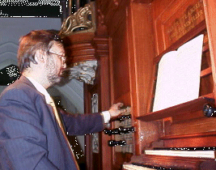

| Organisation
OT99 is organised by the |

Guido Dedene has given organ recitals at many of the OT conferences. |
| OT99
Conference Chair |
|
| OT99
Programme Chair |
|
|
OT99 Conference Policy Board |
|
|
OT99 Conference Programme Committee |
Conference Policy Board plus:
|
| Web site host | |
| Web manager | |
| OT99
Conference Venue |
|
[Programme]
Web site host: TriReme International Ltd